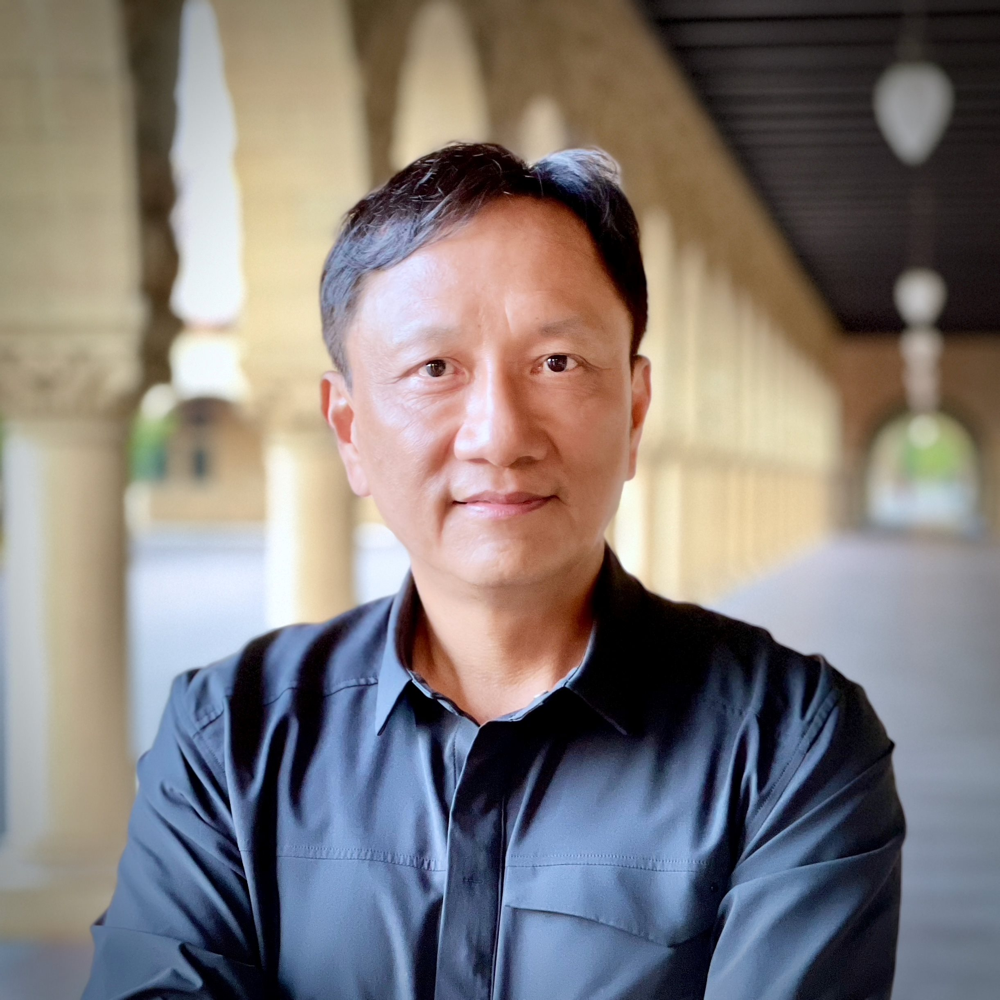

Knowledge-Guided Generative AI in Healthcare: Progress, Shortcomings, and Future Directions
|
Abstract: In 2017, I co-led a team with Professor Peng at Harvard that won a top prize in the Tricorder XPRIZE contest. The Tricorder is a Geo and health sensing device used by Spark, a leading character in the Star Trek TV series, for diagnosis and treatment. The contest challenged over 300 teams to develop a lightweight (less than 2.5 kg) device capable of diagnosing 12 health conditions. The challenge of weight placed on IoT devices was significant, and accurate diagnosis relied on AI algorithms powering the devices. IoTs acted as sensors, collecting body signals, while AI acted as the brain to make sense of the data for accurate diagnosis. In this talk, I will discuss the challenges we faced then, progress made in precision medicine to-date, and propose using domain-knowledge to improve prediction accuracy and robustness through enhanced training data generation.
|

Prof. Edward Chang
Adjunct Professor
Computer Science
tanford University
|
Brief Bio: Edward Y. Chang has been an adjunct professor of Computer Science at Stanford University since 2019. He received his MS in CS and PhD in EE, both from Stanford University, by 1999. From 1999 to 2006, he was a tenured full professor at the ECE department of UC Santa Barbara. From 2006 to 2012, Chang served as the director of research at Google, leading research and development in scalable machine learning, Google QA, and recommendation systems. In subsequent years, Chang served as the president of HTC Healthcare (2012-2021) and a visiting professor at UC Berkeley AR/VR center (2017-2021), where he worked on VR surgery planning, AI-powered medical IoTs, and disease diagnosis. Chang is an ACM fellow and IEEE fellow for his contributions to scalable machine learning and healthcare.
|
Utilizing Big Data from Daily Life to Promote Holistic Mental and Physical Health
|
Abstract: Future Health requires leveraging the fact that each individual is unique due to his/her/their omics, lifestyle, environment, and socioeconomic factors. Progress in sensors, mobile and ubiquitous computing and AI allows gathering information about individuals to build their own personal models for predictive and preventive guidance. Given these models, we give precise recommendations to best suit the prediction for that individual. In this talk, I describe how AI and wearable technologies enable big health data collection in everyday settings, analytics to assess physical and mental health, and smart recommendations objectively. I present examples of how IoT-based remote monitoring and intervention systems are being used to address real-life health and well-being issues and how sense-making is performed on such fine-grained big data.
|
Amir M. Rahmani, PhD, MBA
Associate Professor of CS, EECS, and Nursing
Associate Director of the UCI Institute for Future Health
University of California, Irvine, USA
|
Brief Bio: Amir M. Rahmani is the founder of Health SciTech Group at the University of California, Irvine (UCI) and the co-founder and Associate Director of the Institute for Future Health, a campus-wide Organized Research Unit at UCI. His research includes IoT, e-health, ubiquitous computing, bio-signal processing, health informatics, and big health data analytics. He has been leading several NSF, NIH, Academy of Finland, and European Commission funded projects on Smart Pain Assessment, Community-Centered Care, Family-centered Maternity Care, Stress Management in Adolescents, and Remote Elderly and Family Caregivers Monitoring. He has received numerous research excellence awards (e.g., 2x from Nokia Foundation) and best paper awards. He is the co-author of more than 300 peer-reviewed publications and the associate editor-in-chief of ACM Transactions on Computing for Healthcare and Frontiers in Wearable Electronics journals and the Editorial Board of Nature Scientific Reports.
|
Hosts
 |
Dr. Arijit Roy
Assistant Professor
Department of Computer Science and Engineering
Indian Institute of Information Technology Sri City
(An Institute of National Importance under an Act of Parliament)
630 Gnan Marg, Sri City, Chittoor District - 517 646
Andhra Pradesh, India
Website: www.iiits.ac.in/people/regular-faculty/arijit-roy/
|
 |
Dr. Ayan Mondal
Assistant Professor
Department of Computer Science and Engineering
Indian Institute of Technology Indore
Khandwa Road, Simrol, Indore 453552, India
Website: https://www.iiti.ac.in/people/~ayanm/
|
 |
Prrofessor Sudip Misra, PhD, FIEEE, FNAE, FNASc, FIET, FBCS, FRSPH, FIETE
ACM Distinguished Member
Alexander von Humboldt Fellow (Germany)
IEEE Communications Society Distinguished Lecturer
Professor & INAE Abdul Kalam Technology Innovation National Fellow
Department of Computer Science & Engineering
Indian Institute of Technology
Kharagpur-721302
West Bengal, India
Official Website: https://cse.iitkgp.ac.in/~smisra/
SWAN Group: https://cse.iitkgp.ac.in/~smisra/swan/
|
Webinar Registration
All participants need to pre-register by 5:00 PM, March 16, 2023 by filling up the following form: Registration Link
Zoom sign-in details will be shared with the registered participants using the email address provided in the registration form.
| |
|